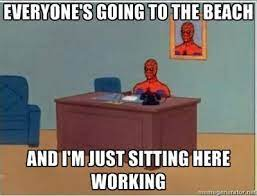

Lots of classes and cooking pt 2 (also sleeping)
Thursday, April 8th 😀
So a pretty busy day started with me literally opening my laptop while still in the bed and pulling up zoom to join the awesome Biological Databases class by Dr. Vineet Bafna. Oh I should probably list my classes for the day.
3 Bioinformatics classes, Immunology, and CSE110. Click for more details
I gotta agree that I have really have amazing classes right now.
- CSE 182 Biological Databses
- CSE 185 Dr. Gymrek's Bioinformtaics Lab
- CSE 190 Biomolecular Big Data
- BICD 140 Immunology
- CSE 110 Software Engineering
So as we went through some mind-blowing, albeit sometimes confusing, algoithms behind Biological Databases, I made my breakfast at the same time.
I had some carrots and peas defrosted in the fridge so I decided to toss them in scrambled eggs, but I needed to confirm if such a recipe actually exists, so I looked up online and luckily, found this.
Then CSE185 was cool, and CSE190 - which is all about Proteins Proteins Proteins - clashed with 185, but I was able to catch up on the last 30 mins of it. Lunch time, could have used the scrambled eggs from morning, but wanted to make a smoothie, so looked at all the stuff I could use:
- Blueberries
- Bananas
- Milk
- Cranberry Cocktail Juice
Then I started dreaming about Computational Immunoproteogenomics again, wondering what ways should we approch the question, what makes someone's immune system more or less successful?